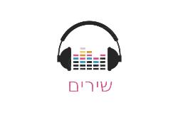

ג'רבה קריאת עשרת הדיברות עם תמונות בתי כנסת ורבנים של ג'רבה
קריאת עשרת הדיברות לחן ג'רבא בטעם העליון
שיר לבבי מרן רבי רחמים חי חויתה הכהן זצוק"ל בית 1מרן בית 2 הרב חיים בית 3 הרב בנימין והרב חננאל הי"ו
יובל טייב - ר' מצליח מאזוז זצוק"ל | Yuval Taib - Rabi Matsliach Mazuz